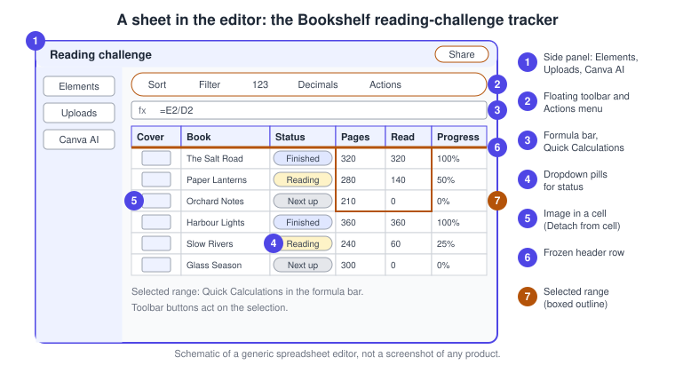
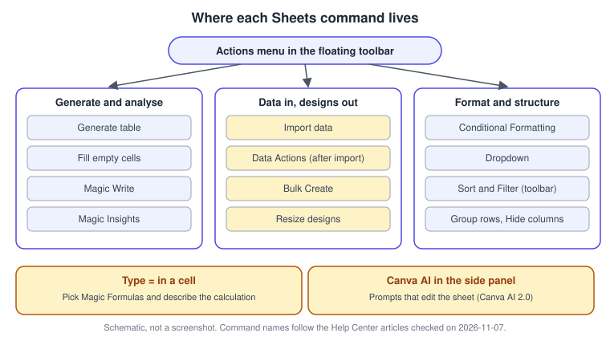
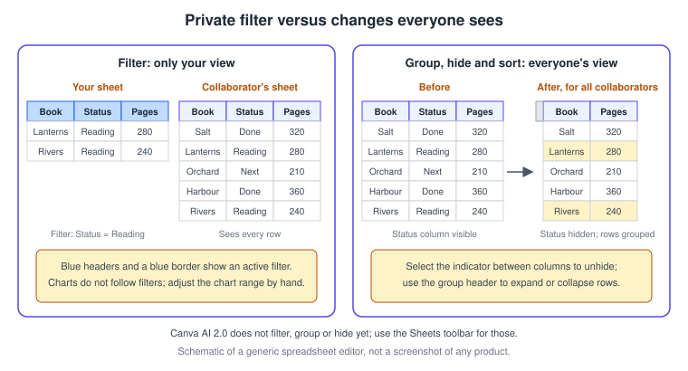
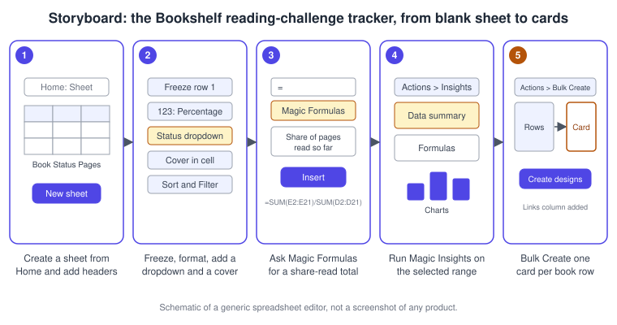
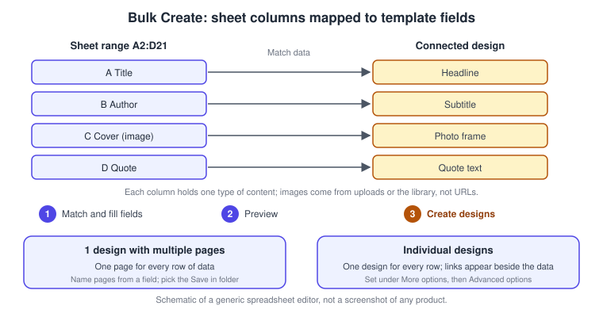

Sheets
|
This content was generated with the assistance of AI and should be verified against the official documentation before being relied on in production. |
This page was checked against the official Canva Help Center on 2026-11-07. It covers Canva Sheets, the spreadsheet product of the Canva Visual Suite, which is built into the same editor as designs, presentations and documents. Sheets appears as a row of the pricing grid on https://www.canva.com/pricing/ and is ticked on every column of that grid (Free, Pro, Business and Enterprise); individual features inside Sheets carry their own plan notes, collected in the Plans and AI tiers section. AI features follow the Standard, Premium and Ultra tiers of the monthly AI allowance, described on Plans, Pricing and AI Allowance. Canva AI 2.0 for Sheets launched with Canva AI 2.0 as a research preview on 2026-04-16 and is documented in the Help Center today without a preview label; no general-availability date is published, it is rolling out gradually, and it is available in English locales only.
The running example is Bookshelf, the book catalogue and reading-list app designed in the Figma sub-section. Its launch campaign includes a reading-challenge tracker: one row per book with a status, a page count and a cover. The tracker feeds a Magic Insights summary for the newsletter, a Bulk Create run that turns twenty rows into "Book of the week" cards, and a bulk resize of the finished cards for other formats.
What Canva Sheets is, and what it is not
Canva Sheets lets you organise, analyse and visualise data in one place, with formulas, charts and formatting, to track projects, manage inventory or spot trends. A sheet lives in the Canva editor like any other design: you create it from Home, share it with the same permission levels, and keep it in the same projects and folders. What sets it apart from a table placed in a design is that a sheet is a data source. Its cells can be summarised by AI, charted, imported from connected apps, and turned into many designs at once.
It is a lightweight spreadsheet tuned for design workflows rather than a replacement for a full desktop spreadsheet. The Help Center states several limits that matter in practice: sorting applies to one column at a time, filtering by conditions such as "greater than" or a date range is not available yet, and charts do not follow filters. When you need heavy modelling, pivot tables or macros, export the sheet and continue in a dedicated tool.
To create a sheet, select Sheet on Home, or select + Create a design and then Sheets. You can download a sheet as CSV, the best format for raw data, which keeps neither formatting nor formulas, or as XLSX, which preserves structured data including formatting and formulas. Sheets are shared by email or link and support tags and comments, covered on Sharing and Permissions and Collaboration, Comments and Version History.
Where Sheets lives in the editor
A sheet opens in the editor with the side panel on the left, a floating toolbar above the selected cells, a formula bar and the grid.

-
The side panel offers Elements and Uploads for images, videos and elements, and Canva AI for prompts that edit the sheet.
-
The floating toolbar appears once cells are selected. It holds Sort, Filter, the 123 number format with a Decimals button, and Actions, the menu that gathers the AI, data and formatting commands.
-
The formula bar shows the formula of the active cell. When you select a range, it also offers Quick Calculations such as sum, average or count, which you can copy and paste into any cell.
-
Dropdown pills give a cell a coloured, selectable status.
-
Images, videos and elements can sit inside a cell.
-
A frozen row or column stays visible while you scroll.
-
The selected range is boxed; for Magic Insights the box is purple.
Source: Canva Help Center: Create and edit spreadsheets in Canva and Canva Help Center: Formulas in Canva Sheets
A map of the commands
Most commands are not buttons on the toolbar; they sit in the Actions menu, in the cell itself or in the Canva AI panel. The figure groups the commands named by the Help Center articles.

Formulas and functions
You enter a formula by selecting a cell and typing an equals sign (=), choosing a function and selecting the cells it needs. The Help Center groups the functions into date and time, engineering, financial, informational, logical, lookup and reference, math and statistical, and text categories. The financial group includes IRR, NPV, PMT, PV, FV, NPER and RATE, and the lookup group includes VLOOKUP, HLOOKUP, XLOOKUP, INDEX and MATCH.
Canva Sheets formulas are entered by hand from predefined functions, while Magic Formulas generate a formula from a plain-language request (see below). Both produce ordinary formulas you can edit.
The tracker needs only a handful of them:
=E2/D2
=SUM(E2:E21)
=COUNTIF(C2:C21, "Finished")
=SUMIFS(D2:D21, C2:C21, "Finished")
=IFERROR(E2/D2, 0)
=IF(F2>=1, "Finished", IF(F2>0, "Reading", "Next up"))
=AVERAGEIF(C2:C21, "Finished", G2:G21)
=XLOOKUP("The Salt Road", B2:B21, F2:F21)In these examples column D holds the page count, E the pages read, C the status, F the progress and G a rating. The first formula gives a per-book progress, the next four summarise the challenge (total pages read, finished books, pages in finished books, a division that returns 0 for a book with no pages), the sixth derives a status and the last two look up and average.
When a formula fails, the cell shows an error code:
| Code | What it means | Usual fix |
|---|---|---|
|
A number is divided by zero or an empty cell |
Check that the denominator is not zero or blank |
|
A referenced cell has the wrong type of data |
Make sure values are numbers, text or dates as the formula expects |
|
The formula points to a cell that was deleted or moved |
Update the reference |
|
An unknown function name or a typo |
Check the spelling of the function |
|
An invalid number or an impossible calculation |
Check for incorrect or extreme values |
|
A lookup value cannot be found |
Make sure the value exists in the searched range |
|
The result needs more cells than are free |
Clear the neighbouring cells |
The article also lists #NULL!, #ERROR and #UNKNOWN!. A See suggested fix prompt appears for syntax errors such as incomplete characters, but not for evaluation errors.
Organising the data: sort, freeze, filter, group and hide
Some of these tools change what everyone sees and some only change your own view. Mixing them up is the most common surprise when several people edit a tracker.

| Tool | How to use it | Who sees the result |
|---|---|---|
Sort |
Select the funnel icon on a column, or Sort in the floating toolbar, then ascending or descending; the right-click menu offers Sort A-Z |
Everyone; sort changes apply instantly. One column at a time, so for a multi-column sort apply the sorts one after another, starting with the secondary column |
Freeze |
Right-click the column or the selected rows and choose Freeze up to column or Freeze up to row; Freeze then Unfreeze row or Unfreeze column undoes it |
Freezing does not affect filters or sorting, and the downloaded file keeps the sort and the frozen view |
Filter |
Select cells or columns, then Filter in the toolbar, or right-click and Create a filter; choose values, search, then OK; Clear filter removes it |
Only you. Blue headers and a blue border show that a filter is on. There is no filter by condition yet, and charts do not update when you filter |
Group rows |
Select rows, right-click, Group rows; drag a group header to move the rows; Remove grouping undoes it. Groups can be nested |
Everyone |
Hide columns |
Select columns, right-click, Hide columns; a thin indicator between columns shows where they are, and selecting it unhides them |
Everyone |
Source: Canva Help Center: Sort and freeze data in Canva Sheets, Canva Help Center: Filter data in Canva Sheets and Canva Help Center: Group and hide data in Canva Sheets
Dropdown pills and conditional formatting
A dropdown turns a cell into a selectable, coloured label, ideal for statuses such as Next up, Reading and Finished. Select the cells or a whole column of existing text, open Actions, choose Dropdown and then Create dropdown, and Canva converts the existing values into options. You can also type a slash (/) in a cell to open Quick actions and search for Dropdown, or pick a preset. Hover an option to rename it, change its colour or delete it, and when the same dropdown appears elsewhere Canva asks whether to apply the change to all similar dropdowns.
Conditional Formatting colours cells automatically from their content. Select a range of text, numbers or dates, open Actions, choose Conditional Formatting, then Rule or Add new rule, and finish with Apply rule. A colour scale rule works only on numbers or dates. Manage Rules lets you edit, duplicate or delete rules. The Help Center states that Conditional Formatting is available to Free, Pro, Business, Enterprise, Education and Nonprofit users.
Number formats, dates and media in cells
Select cells, rows or columns, then choose 123 in the floating toolbar and pick Number, Percentage, Currency or Date. The Decimals button next to it, with its plus and minus controls, sets the number of decimal places. Formatting changes only how a value looks, not the value itself, so a progress of 0.5 shown as a percentage is still 0.5 in formulas. Currency, date and number formats can follow the language or region you choose.
Images, videos and elements can go in cells. Select a cell, open Elements or Uploads in the side panel and choose the item. Drag media over a cell until the drop zone appears to put it inside the cell, where it moves with the cell; if no drop zone appears, the media is placed above the grid as a floating element. Media is fitted to the default cell size, so make the row or column larger to enlarge it, and prefer smaller files because large ones slow the sheet. Select media in a cell to preview it larger, and right-click it and choose Detach from cell to clear it without touching anything else. Uploads and stock are covered on Uploads, Stock Media and Imports.
Procedure 1: build the Bookshelf reading-challenge tracker
The goal is a twenty-row tracker with a frozen header, a status dropdown, a percentage column and a cover in each row.
-
On Canva Home select Sheet (or + Create a design, then Sheets).
-
In row 1 type the headers Cover, Book, Status, Pages, Read, Progress and Rating.
-
Type or paste twenty books in rows 2 to 21, with the Pages and Read values as plain numbers.
-
Select row 1, right-click it and choose Freeze up to row 1 so the headers stay visible while you scroll.
-
Select the Status column values, open Actions, choose Dropdown and then Create dropdown. Give Next up, Reading and Finished their own colours.
-
In F2 enter the formula =IFERROR(E2/D2, 0), fill it down the column, then select the column, choose 123 and then Percentage.
-
Select a Cover cell, open Uploads in the side panel and drop a cover onto the cell so the drop zone accepts it. Make the rows taller if the image looks small.
-
Select the Progress column, open Actions, choose Conditional Formatting, add a colour scale rule and select Apply rule.
-
Select the Status column and choose Filter to show only Reading, then Clear filter when you finish; remember that this filter is private to you.

AI inside Sheets: which tool for which job
There are four AI routes in Sheets, and they overlap. The decision diagram below separates them by the job you have in mind.
The Help Center labels these tools inconsistently. The Magic Formulas and Magic Insights articles call them premium features that count toward your monthly AI usage, while the Canva AI 2.0 for Sheets article carries both a premium note, available on Pro, Business and Nonprofit, and a standard note, available on Free and paid plans without drawing on the allowance on paid plans. Treat the tier as something to confirm in your account with the AI usage tracker rather than as a fixed rule. The tier model itself is described on Plans, Pricing and AI Allowance and the wider Magic Studio set on Magic Studio Tools.
Source: Canva Help Center: Create and edit spreadsheets in Canva and Canva Help Center: Use Canva AI 2.0 for Sheets
Magic Write in Sheets
Magic Write works on cells in three ways, all from the Actions menu:
-
Generate table inserts a table from a prompt, from a blank cell where the table should start.
-
Fill empty cells suggests content for a range that contains only empty cells.
-
Magic Write rewrites or extends the content of the cells you selected.
After a result appears, More like this or This but… refine it with a new prompt, and Insert places it in the sheet. If the selection contains content where it should not, you see an error and nothing happens.
Procedure 2: draft the reading plan
-
Select an empty cell below the tracker where the table should start.
-
In the floating toolbar select Actions, then Generate table.
-
Enter a prompt such as "Weekly reading plan for a twelve-book challenge" and select Generate.
-
Review the result, then select Insert to place the table.
-
To add a Genre column, select the empty cells beside the books, choose Actions and then Fill empty cells, refine with More like this if needed, and select Insert.
Magic Formulas
Magic Formulas turns a plain-language request into a formula for one cell. It is a starting point: adjust the references to your data, combine it with other functions, or use AutoFill to apply the result to other rows or columns. It can only generate a formula for a single cell at a time, needs an online connection, and the See suggested fix feature repairs syntax issues but not logical ones. Because the feature is powered by AI, check the result.
Procedure 3: ask for the share of pages read
-
Select the cell where the total should appear, such as I2.
-
Type =; a suggestion box appears. Select Magic Formulas from the list.
-
Describe the calculation, for example "Share of pages read so far across all books", then select Insert.
-
Check the formula. A result such as =SUM(E2:E21)/SUM(D2:D21) is correct for the tracker; if the prompt was unclear, select the suggested fix, and select the question-mark icon to read an explanation of what the formula does.
-
Select 123 and then Percentage to show the result as a percentage.
Magic Insights
Magic Insights analyses a selected range and returns a data summary, formulas and charts in a side panel. The summary appears only when the prompt is left blank, and the selected range must contain more than one cell, ideally a clear table with a descriptive header on each column. Insights are a snapshot: charts use a copy of the data, so they do not update when the sheet changes, and you have to run Magic Insights again to refresh them.
Procedure 4: summarise the challenge for the newsletter
-
Select the Book, Status, Pages and Read columns with their headers; the selection is boxed in purple.
-
In the floating toolbar select Actions, then Magic Insights.
-
Leave the question blank for top-level insights, or type one such as "Which genre has the most unfinished books?", then select Generate insights.
-
In the side panel, hover over the data summary and select the copy icon, then paste it into a design or document with Cmd+V on macOS or Ctrl+V on Windows.
-
On a formula, select the more icon to copy the formula into the sheet, or to copy the text elsewhere.
-
On a chart, select the more icon and choose Add chart to a new presentation page or Copy chart title. Charts, tables and the Magic Charts feature are covered on Charts, Tables and Data Visualization.
Canva AI 2.0 for Sheets
With Canva AI 2.0 you work on a sheet by describing the change. Select Canva AI in the editor and enter a prompt. The Help Center lists what it can do: add text, numbers, currency and dates; create tables; fill in missing data from patterns; format data; sort and organise it; create charts; summarise and find insights; translate content; add, delete or move rows and columns; and generate formulas. The assistant itself is described on the Canva AI assistant page.
Create a reading tracker with columns for book, author, status, pages and pages read.
Sort column B alphabetically.
Format column F as a percentage with no decimal places.
Fill in the empty cells in column C based on the pattern.
Summarise this data and highlight the main trends.Be specific about the cell range and the format you want; "format this column" works less well than "format column F as a percentage". To undo a change press Cmd+Z on macOS or Ctrl+Z on Windows, or tap Undo on mobile, then try again with a more precise prompt such as "Update cells B2 to B20". The limits to remember:
| Limit | What to know |
|---|---|
One sheet at a time |
It cannot update several sheets in one prompt |
Filter, group and hide |
Not supported yet; use the Sheets toolbar |
Formulas |
Only some functions are supported, for example SUM, AVERAGEIF, COUNTIFS, IFERROR, XLOOKUP and VLOOKUP; enter complex formulas in the formula bar |
Data types |
Text, numbers, currency and dates; media and some cell types are not supported |
Regions |
Currency, date and number formats vary by region and can be adjusted afterwards |
Bulk Create and resizing |
Designs from Sheets data are not supported by Canva AI 2.0 yet |
Language |
English locales only |
Large datasets or complex prompts can be slow; break the request into smaller steps.
Importing data and data connectors
Instead of typing, you can import data. In a sheet open Actions and choose Import data, then pick a connected app such as Google Analytics or HubSpot, or choose Upload to import a CSV or XLSX file up to 25 MB from your device. Sign in to the app and grant Canva permission, choose a dataset and select Done to sync it. The Help Center also publishes guides for connecting World Bank and Statista data.
Before the data lands you can clean it with Data Actions, available on desktop: Find and Replace (exact matches), Fill Blank Cells and Swap rows with columns. Preview the change, then select Save & Apply; Applied Actions lists what you used. Data Actions change only the imported copy, never the original source.
When you refresh a connected source, Canva clears the existing data range, fetches the latest data and creates a new range sized to it. If the new data has fewer rows, the extra old rows are deleted, but anything you typed outside the range, such as notes or formulas next to it, is left untouched. Keep calculations beside the connected range, not inside it.
Importing from the Apps tab in presentations or documents creates a chart rather than a table; to work with raw rows, use Actions and Import data in a sheet. This is currently the only way to put third-party data into spreadsheet cells.
Data connectors are available on Canva Business and Canva Enterprise only, and third-party data apps are not available on Canva Free. The article places the Upload route in the same flow.
Procedure 5: import the Bookshelf reading log
-
Export the reading log from the Bookshelf app as a CSV file with the same headers as the tracker.
-
Open a new sheet, then in the floating toolbar select Actions and Import data.
-
Select Upload and choose the CSV file; the data loads.
-
Select Data Actions, choose Fill Blank Cells and enter "Next up" for the empty Status values, preview the change and select Save & Apply.
-
Select Done to sync the data with the sheet.
-
Add formulas and notes next to the imported range, not inside it, so a later refresh does not remove them.
Bulk Create from a sheet
Bulk Create turns rows into designs. The Help Center describes it as desktop only and available to Pro, Teams, Education and Nonprofit users; the article does not name Business, so check your plan. The full feature, including CSV and the standalone app, is covered on Resize, Bulk Create and Translate; this section covers the sheet route.

The data rules are strict: select a contiguous block of cells, with at least two rows or columns of content, and keep one type of content per column. Images must come from your uploads or the Canva library, because direct image URLs are not supported, and only the first media item in a cell is used. Previews show only the first frame of a video, and some 3D elements do not render in the preview, so generate a test design to confirm.
Bulk Create and Data Autofill sound alike but differ. Bulk Create generates static designs in advance from a sheet, CSV, Excel or a supported app, in a one-time sync. Data Autofill fills one editable brand template from live data over an API, for example from Salesforce.
Procedure 6: create twenty Book of the week cards
-
Prepare columns Title, Author, Cover and Quote for rows 2 to 21, with the covers uploaded to Canva.
-
Select the contiguous range, for example A2:D21.
-
In the toolbar select Actions, then Bulk Create, review the range in the side panel and select Continue.
-
Choose the existing Bookshelf card design to connect. If none is selected, Canva asks you to choose one.
-
Select Match and fill fields, review the automatic matches and, to change one, select the element in the design, choose Match data in the toolbar and pick a field under Connect data.
-
Select More options beside Create designs, and under Advanced options set Output (one design with multiple pages, or individual designs), the naming of each page or design, and a Save in folder.
-
Select Preview to check text and images, close it, and fix any mapping.
-
Select Create designs. Canva adds a column beside your data with links to the generated designs; open them to check the result.
The Bulk Create limit of 300 rows and 150 columns (from the Help Center article on Bulk Create) applies only to that feature, and a sheet has no specific row or column limit.
Bulk resize from a sheet
The same sheet can drive a resize. Put links to designs in a column, and Canva produces copies of each at up to five output sizes.
Procedure 7: resize the cards for other formats
-
In a sheet, paste or drag the links to the finished cards into one column, then select that column.
-
Open the sheet actions (on mobile the Sheet actions button at the bottom) and choose Resize designs.
-
Select a folder for the resized versions.
-
Review the design list and select Continue. If Canva finds duplicate links, it notifies you and you can remove them or resize them anyway.
-
Choose up to five output sizes per design.
-
Select Copy & resize. The resized versions appear in new rows under each original link, with the size listed in the next column.
The article documents these steps with mobile wording. Canva AI 2.0 does not support resizing designs from Sheets data yet. Magic Resize and the resize canvas are described on Resize, Bulk Create and Translate.
Plans and AI tiers
Prices vary by region and change, so none are quoted here; see https://www.canva.com/pricing/ for the current grid.
| Feature | Plan and tier as published | Status |
|---|---|---|
Sheets |
Ticked on Free, Pro, Business and Enterprise in the pricing grid |
Available |
Conditional Formatting |
Free, Pro, Business, Enterprise, Education and Nonprofit |
Available |
Magic Formulas, Magic Insights |
Described by the Help Center as premium features that count toward the monthly AI allowance; the Magic Write article for Sheets states no tier |
Available; confirm the tier in the AI usage tracker |
Canva AI 2.0 for Sheets |
Pro, Business and Nonprofit as premium, and Free and paid plans as standard, with conflicting notes about the allowance |
Rolling out, English only; launched as a research preview on 2026-04-16 |
Data connectors and Import data |
Business and Enterprise |
Available |
Bulk Create from Sheets |
Pro, Teams, Education and Nonprofits, desktop only |
Available |
Bulk resize from Sheets |
The article names no plan |
Available |
Desktop and mobile
Most Sheets articles document the web editor and the mobile apps side by side, and the formulas, filters, grouping, hiding, number formats, media, Magic Write, Magic Formulas, Magic Insights and Canva AI 2.0 flows exist on both. The differences to remember:
-
Bulk Create from a sheet is desktop only.
-
Data Actions are documented for desktop only.
-
The bulk resize article documents the steps with tap wording and a Sheet actions button at the bottom.
-
To unhide all columns at once on mobile, tap and hold, then choose Unhide columns; on desktop, right-click between the visible columns.
-
Undo is the Undo button on mobile and Cmd+Z or Ctrl+Z on desktop.
Keyboard shortcuts
Sheets reuses editor shortcuts and adds little of its own. The ones the Help Center shows are:
| Action | macOS | Windows |
|---|---|---|
Undo the last action, including sort, freeze and number formats |
Cmd+Z |
Ctrl+Z |
Paste a copied formula or insight |
Cmd+V |
Ctrl+V |
Start a formula in a cell |
= |
= |
Open Quick actions in a cell |
/ |
/ |
The wider list is on Keyboard Shortcuts and Quick Actions.
Common mistakes
-
Expecting a filter to be shared. It is private; hide, group and sort are what collaborators see.
-
Expecting a chart to follow a filter or an insight chart to follow new data; adjust the range or run Magic Insights again.
-
Typing notes or formulas inside a connected data range, where a refresh clears them.
-
Mixing text and images in one Bulk Create column, using image URLs, or selecting a non-contiguous range.
-
Asking Canva AI 2.0 to filter, group, hide or resize designs, which it does not support yet, or to edit several sheets at once.
-
Trusting an AI formula without checking its references.
-
Using the CSV download when you need formulas and formatting; choose XLSX.
Where older guides are outdated
Both reference books were written before Sheets existed in the Visual Suite, and neither covers it.
| Older statement | Current behaviour | Date |
|---|---|---|
Tables in a design are the way to hold data |
Canva Sheets is a spreadsheet with formulas, charts, sort, filter and media in cells; tables remain for in-design layout |
Checked 2026-11-07 |
Bulk Create needs a CSV file or the Bulk Create app |
A sheet range can be used directly from Actions and Bulk Create, with links to the generated designs written beside the data |
Checked 2026-11-07 |
AI help means Magic Write for text |
Magic Formulas, Magic Insights, Fill empty cells and Canva AI 2.0 prompts work on cell data |
Canva AI 2.0 announced 2026-04-16 |
Plans are Free, Pro and Teams |
Business replaced Teams for new customers; some Sheets articles still name Teams |
2025-10-30 |
Resizing is a one-design action |
Bulk resize makes up to five sizes for each design linked in a sheet |
Checked 2026-11-07 |
References
-
Canva Help Center: Format numbers as currency, percentages, or dates in Canva Sheets
-
Canva Help Center: Add images, videos, and elements to Canva Sheets
-
Canva Help Center: Format cells with Conditional Formatting in Canva Sheets
-
Canva Help Center: Generate data in Canva Sheets using Magic Write
-
Canva Help Center: Use AI to write functions and formulas for Canva Sheets
-
Canva Help Center: Analyze and summarize Canva Sheets data with Magic Insights